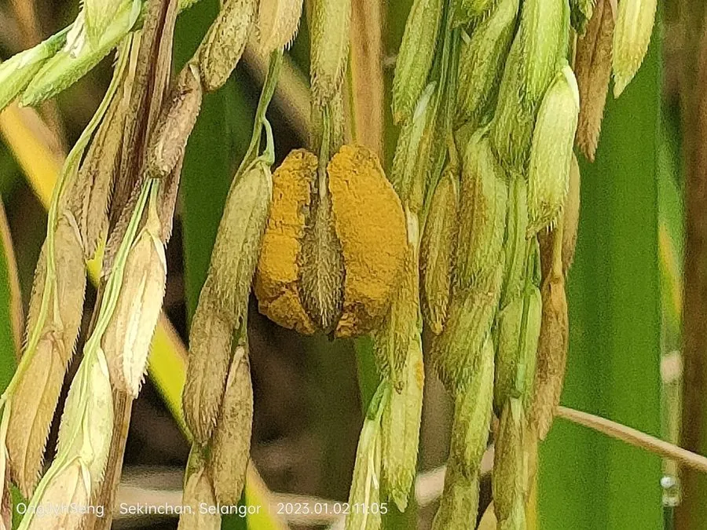

真菌 · 真菌界
稻曲病菌 Ustilaginoidea virens

稻曲病菌侵染水稻穗部，形成黄色至墨绿色的“稻曲球”，不仅造成减产，还会产生稻曲菌素，是人畜有害的水稻病害。
- 分类
- 门子囊菌门纲粪壳菌纲目肉座菌目科麦角菌科属绿核菌属
- 栖息环境
- 水稻穗部，抽穗扬花期遇多雨高湿时易流行
- 地理分布
- 中国各稻区及世界主要稻区广泛发生
- 保护级别
- 暂无评估（IUCN 未评估，植物病原真菌）
物种志
稻曲病菌是子囊菌门麦角菌科的真菌，主要侵染水稻的穗部。病菌侵入花器后，在谷粒上形成球形的稻曲球，初为白色，后变为橙黄色、黄绿色，成熟时呈墨绿色至黑绿色，表面覆盖一层粉末状的厚垣孢子，直径约 0.5–1 cm。稻曲球比正常谷粒大好几倍，十分显眼；后期在稻曲球内形成菌核，可越冬。
稻曲病在中国各稻区都有发生，尤其在抽穗扬花期遇连阴雨、氮肥偏多时容易流行。病穗上的稻曲球消耗养分，导致空秕率增加、千粒重下降，造成减产；更严重的是，稻曲病菌会产生稻曲菌素，对人畜有毒，病粒混入稻谷会影响大米品质和食品安全。防治上主要抓破口前和抽穗期的药剂预防，合理施肥、选用抗病品种，并避免用病稻草还田。
形态与习性
- 寄主水稻，主要侵染穗部
- 病状谷粒变成墨绿色稻曲球
- 稻曲球直径约 0.5–1 cm，表面有厚垣孢子
- 毒素产生稻曲菌素，对人畜有毒
- 流行条件抽穗扬花期多雨、氮肥偏多
- 危害空秕率上升，减产并影响米质
- 防控破口期药剂预防、合理施肥
趣味知识
- 稻曲球初为白色，成熟后变成墨绿色，比正常谷粒大好几倍。
- 它产生的稻曲菌素对人畜有毒，病粒不能食用或喂牲口。
- 抽穗扬花期遇到连阴雨，稻曲病最容易流行。
- 防治稻曲病要抓住破口前和抽穗期用药，错过就很难控制。